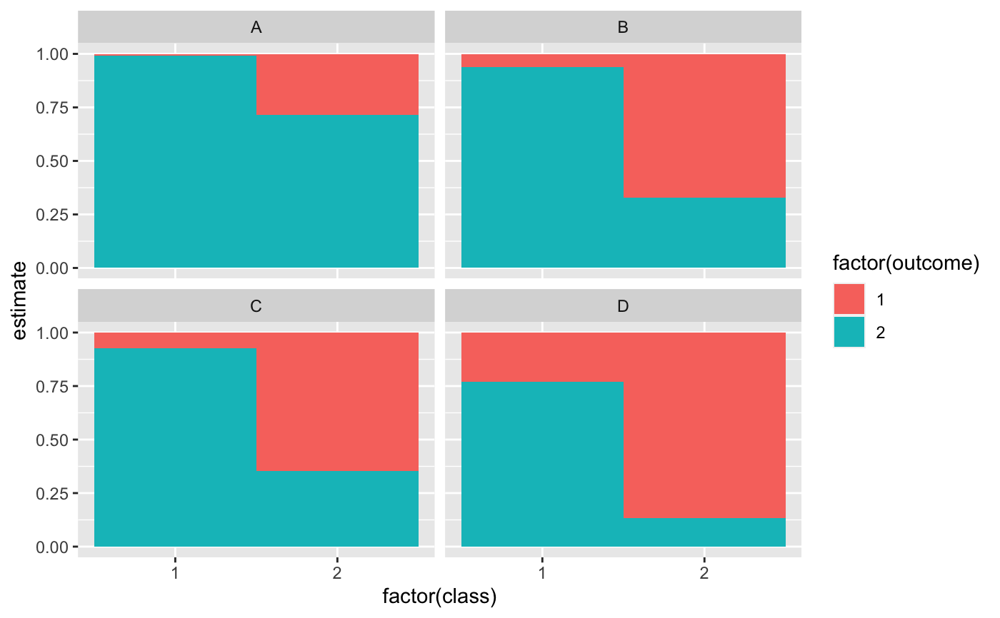

Tidy summarizes information about the components of a model. A model component might be a single term in a regression, a single hypothesis, a cluster, or a class. Exactly what tidy considers to be a model component varies across models but is usually self-evident. If a model has several distinct types of components, you will need to specify which components to return.
# S3 method for poLCA tidy(x, ...)
| x | A |
|---|---|
| ... | Additional arguments. Not used. Needed to match generic
signature only. Cautionary note: Misspelled arguments will be
absorbed in |
Other poLCA tidiers:
augment.poLCA(),
glance.poLCA()
A tibble::tibble() with columns:
The class under consideration.
Outcome of manifest variable.
The standard error of the regression term.
Manifest variable
Estimated class-conditional response probability
library(poLCA) library(dplyr) data(values) f <- cbind(A, B, C, D) ~ 1 M1 <- poLCA(f, values, nclass = 2, verbose = FALSE) M1#> Conditional item response (column) probabilities, #> by outcome variable, for each class (row) #> #> $A #> Pr(1) Pr(2) #> class 1: 0.0068 0.9932 #> class 2: 0.2864 0.7136 #> #> $B #> Pr(1) Pr(2) #> class 1: 0.0602 0.9398 #> class 2: 0.6704 0.3296 #> #> $C #> Pr(1) Pr(2) #> class 1: 0.0735 0.9265 #> class 2: 0.6460 0.3540 #> #> $D #> Pr(1) Pr(2) #> class 1: 0.2309 0.7691 #> class 2: 0.8676 0.1324 #> #> Estimated class population shares #> 0.2792 0.7208 #> #> Predicted class memberships (by modal posterior prob.) #> 0.3287 0.6713 #> #> ========================================================= #> Fit for 2 latent classes: #> ========================================================= #> number of observations: 216 #> number of estimated parameters: 9 #> residual degrees of freedom: 6 #> maximum log-likelihood: -504.4677 #> #> AIC(2): 1026.935 #> BIC(2): 1057.313 #> G^2(2): 2.719922 (Likelihood ratio/deviance statistic) #> X^2(2): 2.719764 (Chi-square goodness of fit) #>#> # A tibble: 16 x 5 #> variable class outcome estimate std.error #> <chr> <int> <dbl> <dbl> <dbl> #> 1 A 1 1 0.00681 0.0254 #> 2 A 2 1 0.286 0.0393 #> 3 A 1 2 0.993 0.0254 #> 4 A 2 2 0.714 0.0393 #> 5 B 1 1 0.0602 0.0649 #> 6 B 2 1 0.670 0.0489 #> 7 B 1 2 0.940 0.0649 #> 8 B 2 2 0.330 0.0489 #> 9 C 1 1 0.0735 0.0642 #> 10 C 2 1 0.646 0.0482 #> 11 C 1 2 0.927 0.0642 #> 12 C 2 2 0.354 0.0482 #> 13 D 1 1 0.231 0.0929 #> 14 D 2 1 0.868 0.0379 #> 15 D 1 2 0.769 0.0929 #> 16 D 2 2 0.132 0.0379#> # A tibble: 216 x 7 #> A B C D X.Intercept. .class .probability #> <dbl> <dbl> <dbl> <dbl> <dbl> <int> <dbl> #> 1 2 2 2 2 1 1 0.959 #> 2 2 2 2 2 1 1 0.959 #> 3 2 2 2 2 1 1 0.959 #> 4 2 2 2 2 1 1 0.959 #> 5 2 2 2 2 1 1 0.959 #> 6 2 2 2 2 1 1 0.959 #> 7 2 2 2 2 1 1 0.959 #> 8 2 2 2 2 1 1 0.959 #> 9 2 2 2 2 1 1 0.959 #> 10 2 2 2 2 1 1 0.959 #> # … with 206 more rows#> # A tibble: 1 x 8 #> logLik AIC BIC g.squared chi.squared df df.residual nobs #> <dbl> <dbl> <dbl> <dbl> <dbl> <dbl> <dbl> <int> #> 1 -504. 1027. 1057. 2.72 2.72 9 6 216library(ggplot2) ggplot(tidy(M1), aes(factor(class), estimate, fill = factor(outcome))) + geom_bar(stat = "identity", width = 1) + facet_wrap(~variable)## Three-class model with a single covariate. data(election) f2a <- cbind( MORALG, CARESG, KNOWG, LEADG, DISHONG, INTELG, MORALB, CARESB, KNOWB, LEADB, DISHONB, INTELB ) ~ PARTY nes2a <- poLCA(f2a, election, nclass = 3, nrep = 5, verbose = FALSE)#> Error in cbind(MORALG, CARESG, KNOWG, LEADG, DISHONG, INTELG, MORALB, CARESB, KNOWB, LEADB, DISHONB, INTELB): object 'MORALG' not found#> Error in tidy(nes2a): object 'nes2a' not foundtd#> Error in eval(expr, envir, enclos): object 'td' not found# show ggplot(td, aes(outcome, estimate, color = factor(class), group = class)) + geom_line() + facet_wrap(~variable, nrow = 2) + theme(axis.text.x = element_text(angle = 90, hjust = 1))#> Error in ggplot(td, aes(outcome, estimate, color = factor(class), group = class)): object 'td' not found#> Error in augment(nes2a): object 'nes2a' not foundau#> Error in eval(expr, envir, enclos): object 'au' not found#> Error in count(au, .class): object 'au' not found# if the original data is provided, it leads to NAs in new columns # for rows that weren't predicted au2 <- augment(nes2a, data = election)#> Error in augment(nes2a, data = election): object 'nes2a' not foundau2#> Error in eval(expr, envir, enclos): object 'au2' not found#> Error in eval(expr, envir, enclos): object 'au2' not found